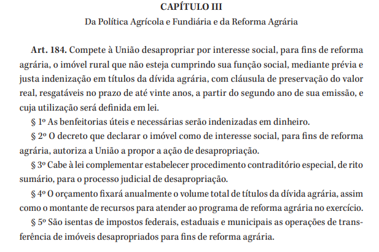
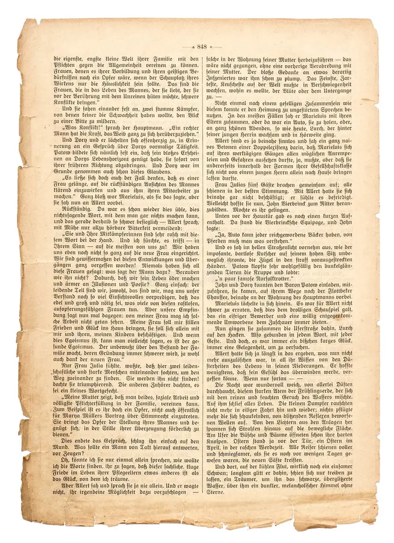
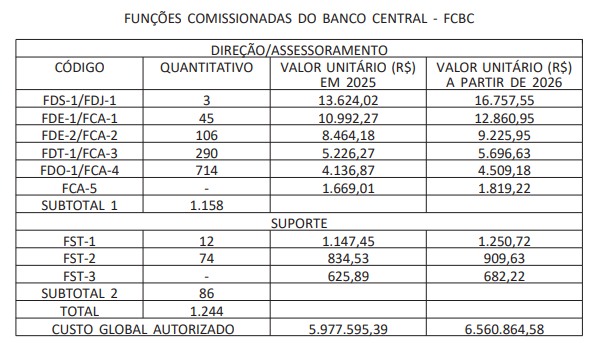
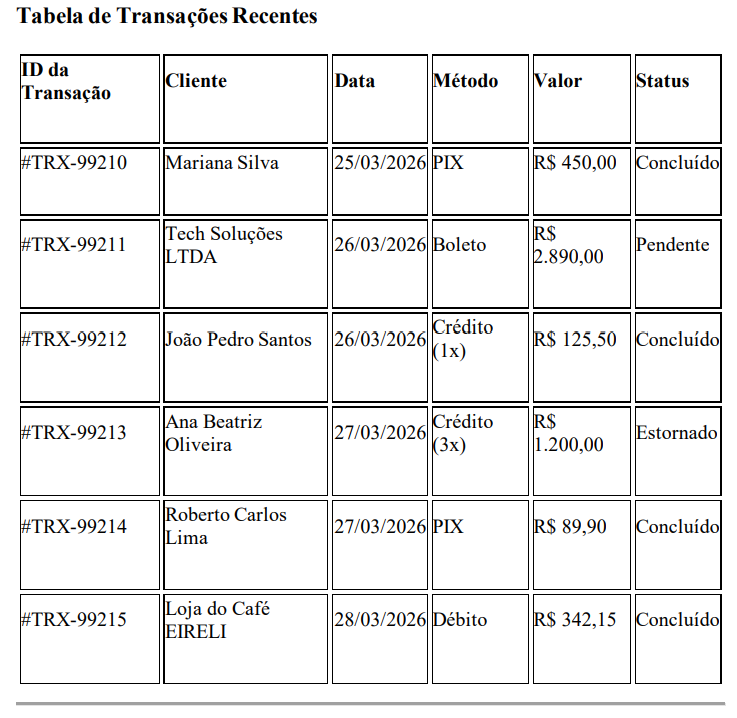
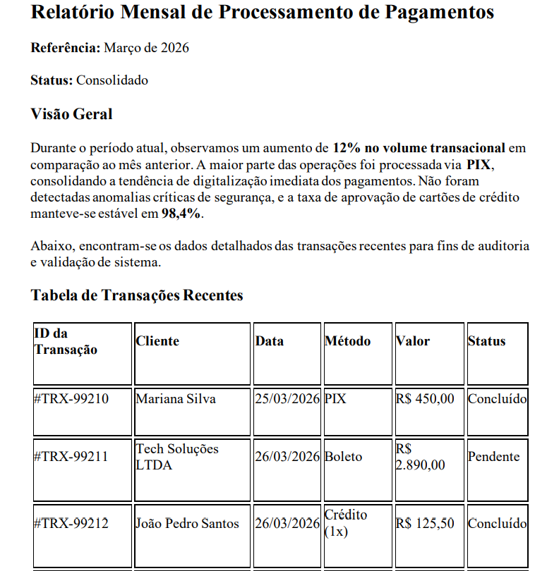

5º Encontro — Grupo de Estudos NLP (INF-UFG / CEIA)
Do HTML bruto ao JSON estruturado — todo o pipeline
| Parte | Tema | Ferramentas |
|---|---|---|
| 1 | Como os dados chegam | Formatos brutos |
| 2 | HTML e Regex | BeautifulSoup, regex |
| 3 | PDFs simples | PyMuPDF, pdfplumber |
| 4 | Documentos complexos | Docling, Unstructured |
| 5 | OCR (escaneados) | Tesseract, Gemini (visão) |
| 6 | Extração estruturada | LLM → JSON |
O problema antes de qualquer tratamento
O conteúdo chega embrulhado em tags
<h1>CAPÍTULO III</h1>
<h2>Da Política Agrícola e Fundiária</h2>
<p class="artigo"><strong>Art. 184.</strong> Compete à União desapropriar por interesse social...</p>
<!-- Nota: Atualizado pela EC 123 -->
<p class="paragrafo">§ 1º As benfeitorias úteis...</p>Parece texto — mas por dentro é um stream binário
%PDF-1.4
BT /F1 14 Tf 72 770 Td (Art. 184) Tj ET
BT /F1 11 Tf 72 740 Td (Compete a Uniao desapropriar...) Tj ET
...
stream x\x9c\xed]Ko\xe3H\xb2...(linha=2, coluna=3) não existe no arquivo.Pixel[120,45] = (42, 38, 35) # marrom escuro (tinta?)
Pixel[121,45] = (245, 240, 228) # bege (papel?)


Nem sempre lidamos com PDFs. APIs, dumps de banco de dados e Diários Oficiais costumam entregar os dados nestes formatos:
JSON
{
"id": "TRX-123",
"status": "concluido",
"tags": ["pix", "urgente"]
}JSONL (JSON Lines)
{"id": 1, "status": "ok"}
{"id": 2, "status": "erro"}
{"id": 3, "status": "ok"}XML
<doc id="123">
<status>concluido</status>
<tag>pix</tag>
</doc>Após o parsing, o texto precisa ser persistido. A escolha do formato impacta velocidade, compressão e compatibilidade.
| Formato | Tipo | Vantagens | Limitações | Uso típico |
|---|---|---|---|---|
| .txt | Texto puro | Universal, legível por qualquer ferramenta | Sem estrutura, sem tipos, sem compressão | Logs, texto corrido, corpora simples |
| .csv | Tabular (texto) | Legível, compatível com Excel e pandas | Sem tipos nativos, lento em escala, frágil com texto com vírgulas | Dados tabulares pequenos/médios |
| .parquet | Colunar (binário) | Compressão alta, leitura colunar rápida, preserva tipos | Não legível por humanos, requer biblioteca | Pipelines de ML/NLP, Spark em produção, etc |
| .orc | Colunar (binário) | Compressão superior ao Parquet em alguns casos, otimizado para Hive/Spark | Menor suporte fora do ecossistema Hadoop | Data lakes, pipelines Spark em produção |
.txt | dados tabulares pequenos → .csv | pipeline de ML em escala → .parquet| Tipo | O que vimos | Desafio |
|---|---|---|
| HTML | Tags, CSS, comentários | Separar texto do markup |
| PDF nativo | Stream binário | Reconstruir ordem do texto |
| PDF tabelas | Coordenadas X,Y | Inferir grade sem metadados |
| Escaneado | Pixels RGB | Não há texto — precisa de OCR |
A qualidade do seu pipeline de IA começa aqui — antes do embedding, antes do modelo.
Texto original (HTML)
<h1>CAPÍTULO III</h1>
<h2>Da Política Agrícola e Fundiária</h2>
<p class="artigo"><strong>Art. 184.</strong> Compete à União desapropriar...</p>
<!-- Nota: Atualizado pela EC 123 -->Código
soup = BeautifulSoup(html_bruto,
'html.parser')
texto = soup.get_text(
separator='\n', strip=True
)Resultado
CAPÍTULO III
Da Política Agrícola e Fundiária
Art. 184. Compete à União desapropriar...<strong> e comentários sumiram — sobrou só o conteúdo textual.Texto original (HTML)
<h1>CAPÍTULO III</h1>
<p class="artigo">Art. 184. Compete...</p>
<p class="paragrafo">§ 1º As benfeitorias úteis...</p>
<p class="paragrafo">§ 2º O decreto que declarar...</p>Código
titulo = soup.find('h1')
artigos = soup.find_all(class_='artigo')
paragrafos = soup.find_all(
'p', class_='paragrafo'
)Resultado
Título: CAPÍTULO III
Artigos Encontrados:
-> Art. 184. Compete...
Parágrafos (§):
• § 1º As benfeitorias úteis...
• § 2º O decreto que declarar...Texto original (HTML)
<table id="fcbc">
<tr><th>CÓDIGO</th><th>QUANT.</th></tr>
<tr><td>FDS-1/FDJ-1</td><td>3</td></tr>
<tr><td>FDE-1/FCA-1</td><td>45</td></tr>
</table>Código
tabela = soup.find('table', id='fcbc')
dados = []
for linha in tabela.find_all('tr'):
celulas = [
td.get_text(strip=True)
for td in linha.find_all(
['th', 'td'])
]
dados.append(celulas)Resultado
CÓDIGO | QUANTITATIVO
-----------------+--------------
FDS-1/FDJ-1 | 3
FDE-1/FCA-1 | 45<tr> e <td> mantendo as linhas pareadas.Página Web / Print

Código
texto = soup.get_text('\n', strip=True)
ids = re.findall(
r'#TRX-\d{5}', texto)
datas = re.findall(
r'\d{2}/\d{2}/\d{4}', texto)
valores = re.findall(
r'R\$\s?[\d.,]+', texto)Resultado
IDs Encontrados:
['#TRX-99210', '#TRX-99211', '#TRX-99212']
Datas de Processamento:
['25/03/2026', '26/03/2026', '26/03/2026']
Valores Financeiros:
['R$ 450,00', 'R$ 2.890,00', 'R$ 125,50']Página Web / Print
Código
# Identificando status de alerta
pendentes = re.findall(r'Pendente', texto)
# Limpeza estrutural
texto_limpo = re.sub(
r'\n{3,}', '\n\n', texto)
texto_limpo = re.sub(
r' {2,}', ' ', texto_limpo)Resultado
Alertas de Status Encontrados:
['Pendente']
Texto limpo e padronizado:
Relatório Mensal de Processamento de Pagamentos
Referência: Março de 2026
Visão Geral
Durante o período atual, observamos um aumento
de 12% no volume transacional...
Tabela de Transações Recentes
ID da Transação Cliente Data Método Valor Status
#TRX-99210 Mariana Silva 25/03/2026 PIX R$ 450,00 Concluído
#TRX-99211 Tech Soluções 26/03/2026 Boleto R$ 2.890,00 Pendente
#TRX-99212 João Pedro Santos 26/03/2026 Crédito (1x) R$ 125,50 Concluído| Ferramenta | Vantagens | Limitações |
|---|---|---|
| BeautifulSoup | Entende a árvore HTML, navega por tags, preserva tabelas | Só funciona com HTML/XML |
| Regex | Rápido, sem dependências, controle total | Frágil com formatos variáveis |
HTML resolvido. Mas docs corporativos estão em PDF. BS4 não lê PDFs.
Texto original no PDF
Código
import fitz # PyMuPDF
doc = fitz.open(stream=pdf_bytes,
filetype="pdf")
texto = doc[0].get_text()
doc.close()
artigos = re.findall(
r'Art\. \d+', texto)
paragrafos = re.findall(
r'§ \dº', texto)Resultado
CAPÍTULO III
Da Política Agrícola e Fundiária...
Art. 184. Compete à União desapropriar
por interesse social, para fins de
reforma agrária...
---
Artigos: ['Art. 184']
Parágrafos: ['§ 1º', '§ 2º', '§ 3º', '§ 4º', '§ 5º']Tabela original no PDF
PyMuPDF extrai assim
FUNÇÕES COMISSIONADAS DO BANCO CENTRAL - FCBC
DIREÇÃO/ASSESSORAMENTO
CÓDIGO
QUANTITATIVO
VALOR UNITÁRIO (R$) EM 2025
VALOR UNITÁRIO (R$) A PARTIR DE 2026
FDS-1/FDJ-1
3
13.624,02
16.757,55
FDE-1/FCA-1
45
...Tabela original no PDF
Código
import pdfplumber
with pdfplumber.open(pdf_path) as pdf:
pagina = pdf.pages[0]
tabela = pagina.extract_table()
for linha in tabela:
print(linha)Resultado
['CÓDIGO', 'QUANTITATIVO', 'VALOR (R$) 2025', 'VALOR (R$) 2026']
['FDS-1/FDJ-1', '3', '13.624,02', '16.757,55']
['FDE-1/FCA-1', '45', '10.992,27', '12.860,95']
['FDE-2/FCA-2', '106', '8.464,18', '9.225,95']
['FDT-1/FCA-3', '290', '5.226,27', '5.696,63']| PyMuPDF | pdfplumber | |
|---|---|---|
| Texto corrido | Perfeito, muito rápido | Funciona, mais lento |
| Tabelas | Perde estrutura | Preserva grade |
| Velocidade | Muito rápido | Mais lento |
| OCR | Não faz | Não faz |
PyMuPDF para texto, pdfplumber para tabelas.
Mas para docs complexos, ambos perdem a estrutura semântica.
Relatório Mensal de Processamento de Pagamentos <-- título? parágrafo?
Visão Geral <-- subtítulo ou texto?
Durante o período atual, observamos um aumento
de 12% no volume transacional...
Tabela de Transações Recentes <-- tudo é flat
ID da Transação Cliente Data
#TRX-99210 Mariana Silva 25/03/2026Texto original

Código
from docling.document_converter \
import DocumentConverter
converter = DocumentConverter()
resultado = converter.convert(pdf)
md = resultado.document\
.export_to_markdown()Resultado
# Relatório Mensal de Processamento de Pagamentos
Referência: Março de 2026
## Visão Geral
Durante o período atual, observamos um aumento de 12% no volume transacional...
## Tabela de Transações Recentes
| ID da Transação | Cliente | Data | Método | Valor | Status |
|---|---|---|---|---|---|
| #TRX-99210 | Mariana Silva | 25/03/2026 | PIX | R$ 450,00 | Concluído |
| #TRX-99211 | Tech Soluções | 26/03/2026 | Boleto | R$ 2.890,00 | Pendente |Texto original
Código
from unstructured.partition.pdf \
import partition_pdf
elementos = partition_pdf(
pdf_path, strategy="auto")
for elem in elementos:
tipo = type(elem).__name__
print(f"[{tipo}] {elem}")Tipos semânticos
[ 0] Title | Relatório Mensal...
[ 1] NarrativeText | Referência: Março...
[ 2] Title | Visão Geral
[ 3] NarrativeText | Durante o período...
[ 4] NarrativeText | A maior parte das...
[ 5] Title | Tabela de Transações...
[ 6] Table | ID da Transação | ...
[ 7] Title | Observações Técnicas
Distribuição: Title: 4 NarrativeText: 4
Table: 1Table — o Unstructured isola a tabela como bloco independente, pronto para usar.Tabela bruta (texto plano)
ID da Transação | Cliente | Data | Método | Valor | Status
#TRX-99210 | Mariana Silva | 25/03/2026 | PIX | R$ 450,00 | Concluído
#TRX-99211 | Tech Soluções | 26/03/2026 | Boleto | R$ 2.890,00 | Pendente
#TRX-99212 | João P. Santos | 26/03/2026 | Crédito (1x) | R$ 125,50 | ConcluídoFiltrando só tabelas
from unstructured.documents.elements \
import Table
tabelas = [e for e in elementos
if isinstance(e, Table)]
print(tabelas[0].text)Texto original
...aumento de 12% no volume...
| #TRX-99210 | PIX | R$ 450,00 |
| #TRX-99211 | Boleto | R$ 2.890,00 |Código
# No Markdown do Docling
valores = re.findall(
r'R\$\s?[\d.,]+', markdown)
percentuais = re.findall(
r'[+-]?\d+[.,]?\d*%', markdown)
secoes = re.findall(
r'^#+\s+(.+)$', markdown,
re.MULTILINE)Resultado
Valores monetários (Tabela):
['R$ 450,00', 'R$ 2.890,00',
'R$ 125,50', 'R$ 1.200,00', ...]
Percentuais (Texto):
['12%', '98,4%']
Seções Encontradas:
['Relatório Mensal de Processamento...',
'Visão Geral',
'Tabela de Transações Recentes']| Ferramenta | Vantagens | Limitações |
|---|---|---|
| Docling (nativo) | Markdown hierárquico, rápido | Pode errar em layouts complexos |
| Docling + modelo | Melhor detecção de layout | Mais lento, requer modelo |
| Unstructured | Auto-detecção de tipos | Config verbosa, resultado varia |
Todos assumem texto digital. E quando é imagem escaneada?
Imagem limpa — OK
CAPÍTULO III
Da Política Agrícola e Fundiária e da Reforma Agrária
Art. 184. Compete à União desapropriar por interesse
social, para fins de reforma agrária, o imóvel rural...
§ 1º As benfeitorias úteis e necessárias serão...Imagem degradada (blur+ruido+rotacao)
CAPITUL0 III
Da PoIitica AgricoIa c Fundiaria c da Rcforma Agraria
Art. l84. Compctc a Uniao dcsapropriar por intcressc
sociaI, oara fins dc rcf0rma agraria, o imoveI rura1...
$ lº As benfcitorias utcis c nccessarias scrao...Entrada (imagem degradada)
[IMAGEM: print_artigo_ruim.png]
- ruido
- blur
- perda de acentuacao
- artefatos de compressaoCódigo
prompt = """Extraia TODO o texto
desta imagem de legislação.
Preserve a pontuação e os
parágrafos originais.
Não invente dados."""
resposta = model.generate_content(
[prompt, img_degradada]
)Resultado
CAPÍTULO III
Da Política Agrícola e Fundiária e da Reforma Agrária
Art. 184. Compete à União desapropriar por interesse social, para fins de reforma agrária, o imóvel rural que não esteja cumprindo sua função social, mediante prévia e justa indenização em títulos da dívida agrária...
§ 1º As benfeitorias úteis e necessárias serão indenizadas em dinheiro.prompt = f"""Você recebeu o resultado de um OCR (Tesseract) de um documento legal.
O OCR pode conter erros. Use a IMAGEM como referência para corrigir.
REGRAS:
- Corrija erros de OCR (caracteres trocados, palavras sem acento)
- Preserve a estrutura original (artigos, incisos, parágrafos)
- NÃO invente dados que não estão na imagem
- Se não conseguir ler uma palavra, marque como [ilegível]
TEXTO DO OCR (Tesseract):
{texto_tesseract}
Corrija o texto acima usando a imagem como referência."""
resposta = model.generate_content([prompt, imagem])| Critério | Tesseract | LLM (Visão) | Tesseract + LLM |
|---|---|---|---|
| Custo | Grátis | $$$ tokens | $$ tokens |
| Latência | ~100ms | ~2-5s | ~3-6s |
| Precisão (limpa) | Alta | Alta | Alta |
| Precisão (degradada) | Baixa | Alta | Muito alta |
| Tabelas/Formatação | Perde | Preserva | Preserva |
| Alucinação | Zero | Possível | Mínima |
O pipeline Tesseract → LLM é o padrão de produção real.
Entrada (texto do Docling)
| ID da Transação | Cliente | Data | Método | Valor | Status |
|---|---|---|---|---|---|
| #TRX-99210 | Mariana Silva | 25/03/2026 | PIX | R$ 450,00 | Concluído |
| #TRX-99211 | Tech Soluções | 26/03/2026 | Boleto | R$ 2.890,00 | Pendente |
| #TRX-99212 | João Pedro Santos | 26/03/2026 | Crédito (1x) | R$ 125,50 | Concluído |Saída (JSON da LLM)
{"transacoes": [
{"id": "TRX-99210",
"cliente": "Mariana Silva",
"data": "2026-03-25",
"metodo": "PIX",
"valor": 450.00,
"status": "concluido"},
{"id": "TRX-99211",
"cliente": "Tech Soluções",
"data": "2026-03-26",
"metodo": "Boleto",
"valor": 2890.00,
"status": "pendente"}
]}linhas = re.findall(
r'\|\s*(#TRX-\d+)\s*\|\s*([^|]+?)'
r'\s*\|\s*(\d{2}/\d{2}/\d{4})\s*\|'
r'\s*([^|]+?)\s*\|\s*R\$ ([^|]+?)'
r'\s*\|\s*([^|]+?)\s*\|',
texto_tabela)
for tid, cliente, dt, met, val, st in linhas:
# + conversão de data
# + tratamento de floats
# + normalização de status
# + muito frágil a mudanças no layout...prompt = f"""Extraia as transacoes
em JSON no formato:
[{{"id": str,
"cliente": str,
"data": YYYY-MM-DD,
"metodo": str,
"valor": float,
"status": str}}]
TEXTO:
{texto_tabela}"""
dados = json.loads(
model.generate_content(prompt)
.text
)| Critério | Regex | LLM |
|---|---|---|
| Linhas de código | ~20+ (padrões) | ~5 (prompt) |
| Tempo de dev | Minutos a horas | Segundos |
| Flexibilidade | Frágil (formato fixo) | Robusta (contexto) |
| Inconsistências | Quebra | Interpreta |
| Custo | Zero | $$$ por token |
| Latência | Microssegundos | Segundos |
| Determinismo | 100% | Varia |
| Alucinação | Impossível | Pode inventar |
Regex aparece em todas as etapas. Nenhuma ferramenta resolve tudo sozinha.
| Ferramenta | Melhor para | Evitar quando |
|---|---|---|
| Regex | Pós-processamento, padrões | Ferramenta primária de parsing |
| BeautifulSoup | HTML / XML estruturado | Docs não-HTML |
| PyMuPDF | PDF nativo, texto corrido | Tabelas ou escaneados |
| pdfplumber | Tabelas em PDF nativo | Escaneados ou sem bordas |
| Docling | Docs complexos / RAG | Scripts simples |
| Unstructured | Particionamento automático | Controle fino necessário |
| Tesseract | OCR gratuito / offline | Precisão crítica |
| Tesseract + LLM | OCR em produção | Orçamento zero |
| LLM (texto) | Extração estruturada | Volume massivo |
Grupo de Estudos NLP — INF-UFG / CEIA